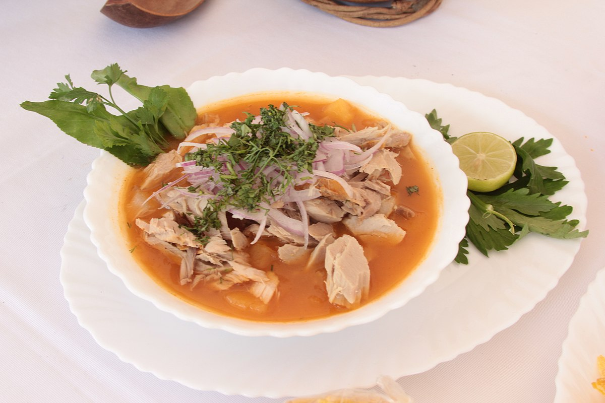

encebollado

A bowl of encebollado soup aka the hangover cure
Encebollado is an original dish from the province of Guayas, in southwestern Ecuador, as well as from Manabí. The
broth that accompanies the fish is made from blended cassava and can be
seasoned with chili powder, cumin or other spices to taste.
Encebollado de pescado is one of my favorite soups, the name is hard to translate, and literally it could be
translated
as oniony fish soup. Encebollado is made with fresh caught tuna and or mahi-mahi, yuca or cassava root,
tomatoes, onions, spices and
is served with curtido or pickled onions and tomatoes on top or mixed in with the soup. Locals are often seen
smashing a handful of plantain chips into their soup (highly recommended) The pickled or lime marinated
red onions are what give it the name “encebollado”. It is a typical soup from the coastal region in Ecuador.
In fact it is known as the best hangover cure (like so many other Ecuadorian dishes); and restaurants that
specialize in
encebollado begin serving it in the early morning.
Ingredients
- 2 lbs fresh albacore tuna or similar
- 1 lb yuca or cassava fresh or frozen
- 2 tbs sunflower oil
- 2 tomatoes diced
- 1/2 red onion diced
- 1 teaspoon chili powder
- 2 teaspoons ground cumin
- 8 cups of water
- 5 cilantro sprigs
- Salt to taste
Instructions
- Heat the oil on medium heat to make a refrito with diced onion, tomato, cumin, chili powder and salt.
- Add the water and, bring to a boil.
- Add the tuna and cook for until the tuna is fully cooked, about 15 minutes.
- Drain the tuna and keep the broth to cook the yuca.
- Separate or break the tuna into small to medium size pieces.
- Bring the tuna broth to a boil and add the yucas, cook until tender but firm.
- Take the yuca from the broth, remove the strings and cut into bite size chunks.
- Add the yuca chunks and tuna pieces to the broth, taste and add salt if needed.
- Re-warm the soup if necessary and serve topped with a good amount of pickled onion and tomato salsa, if
desired can also
be served with chifles or plantain chips, tostado corn nuts, avocado slices and extra lime slices.
Your encebollado is ready to cure your hangover! Don't forget to crush some plantain chips on top of your soup.
It's worth it!